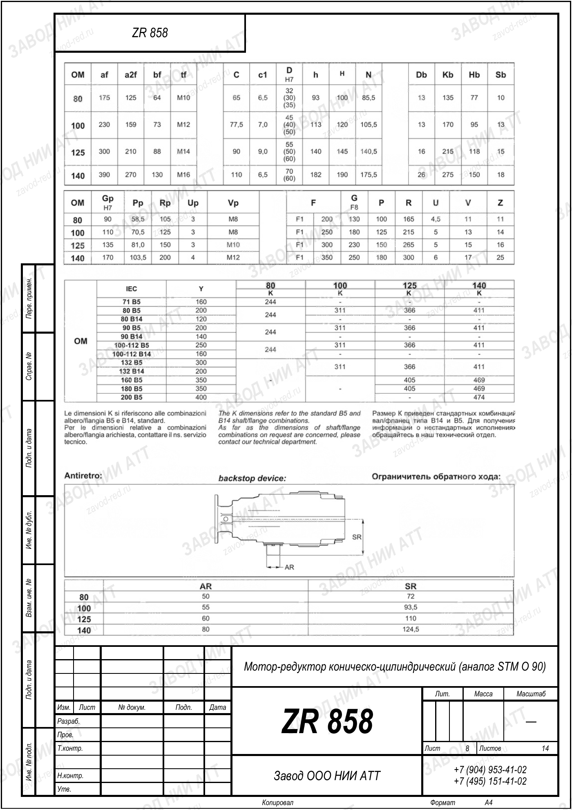

Собственное производствоПромышленные редукторы для производителей оборудования•Отгрузка по всей России•Аналоги SEW, NORD, Bonfiglioli без переделки рамы•Расчёт и КП за 15 минут•Гарантия 36 месяцевПромышленные редукторы для производителей оборудования•Отгрузка по всей России•Аналоги SEW, NORD, Bonfiglioli без переделки рамы•Расчёт и КП за 15 минут•Гарантия 36 месяцев
Главная›Блог›Редуктор STM: цена и где купить аналог
Аналоги импорта · STM
Редуктор STM: цена и где купить аналог ZR
Инженеры Завода Редукторов · производство и подбор аналогов
Сколько стоит редуктор STM и как купить аналог ZR выгоднее? Разбираем факторы цены и порядок заказа.
Стоимость редуктора STM зависит от типа передачи, типоразмера, передаточного числа и комплектации. Из-за импортной логистики цена и сроки нестабильны. Габаритный аналог ZR производства ООО «НИИ АТТ» (Челябинск) позволяет получить сопоставимый привод с прозрачным расчётом стоимости по запросу.
От чего зависит цена редуктора
Цена редуктора складывается из типа передачи, передаточного числа, крутящего момента и типоразмера корпуса. Червячные исполнения обычно дешевле цилиндрических, но уступают им по КПД и ресурсу.
На итоговую стоимость влияют комплектация (мотор, фланец, вал), объём партии и срочность. У импортных STM к цене добавляются логистика и курсовые колебания, что усложняет планирование бюджета.
Почему цену считают по запросу
Мы не публикуем фиксированный прайс, потому что каждый привод подбирается под конкретную задачу. Мощность, передаточное число, тип монтажа и режим работы напрямую влияют на типоразмер и комплектацию.
Расчёт по запросу гарантирует, что вы получите актуальную цену именно под свою конфигурацию, без усреднённых значений. Так исключаются переплаты за лишний функционал или недооценка нагрузки.
Типовое исполнение червячного привода
Как сэкономить с аналогом ZR
Аналог ZR — продукция собственного производства ООО «НИИ АТТ», поэтому вы не платите за импортную логистику и курсовую наценку. Сроки поставки сокращаются, а совместимость по посадочным местам исключает доработку узла.
Габаритный подбор сохраняет межосевое расстояние, фланец и вал, поэтому замена STM на ZR не требует переделки рамы и муфт. Это снижает совокупную стоимость владения приводом.
Как рассчитать нужный типоразмер
Перед покупкой определяют требуемый момент и скорость. Момент рассчитывают по формуле T=9550·P·КПД/n2, а передаточное число — по i=n1/n2 при n1≈1450 об/мин.
Полученные значения сопоставляют с рядом ZR. Мы не присваиваем аналогу произвольный индекс — конкретный типоразмер подберём в калькуляторе по вашим данным, что напрямую влияет на итоговую цену.
Расчёт момента и сервис-фактора перед подбором
Где купить аналог
Купить аналог ZR можно напрямую у производителя — ООО «НИИ АТТ» (Челябинск). Это исключает посредников и обеспечивает гарантию и техническую поддержку по подбору.
Оформление начинается с калькулятора подбора: вы указываете характеристики STM, получаете рекомендованный типоразмер ZR и запрашиваете расчёт стоимости под свою комплектацию.

Габаритный и присоединительный чертёж STM O 90, лист 8 · аналог ZR 858 — все чертежи STM
Порядок заказа
Сначала через калькулятор подбирается аналог, затем инженеры проверяют совместимость по чертежу и уточняют комплектацию. После согласования формируется коммерческое предложение с ценой.
Стоимость рассчитывается по запросу и фиксируется в КП. Такой порядок обеспечивает прозрачность и позволяет заранее спланировать бюджет и сроки поставки.
Факторы стоимости редуктора
Фактор
Влияние на цену
Тип передачи
червяк дешевле цилиндра
Передаточное число i
i=n1/n2
Крутящий момент T
T=9550·P·КПД/n2
Комплектация
мотор/фланец/вал
Логистика
у импорта выше
STM против аналога ZR по стоимости
Критерий
STM
Аналог ZR
Производство
импорт
ООО «НИИ АТТ»
Логистика в цене
да
нет
Присоединительные размеры
оригинал
сохраняются
Цена
по запросу
по запросу
Подберём аналог STM под вашу задачу. Введите параметры в калькуляторе подбора — покажем нашу модель ZR и рассчитаем цену. Общее по замене импорта — импортозамещение.
Вопросы и ответы
Частые вопросы: STM и аналоги ZR
Сколько стоит редуктор STM?
Цена зависит от типа, типоразмера, передаточного числа и комплектации. Точную стоимость аналога ZR рассчитываем по запросу под вашу задачу.
Почему нет фиксированного прайса?
Каждый привод подбирается индивидуально по мощности, моменту и монтажу, поэтому цена формируется по запросу под конкретную конфигурацию.
Дешевле ли аналог ZR?
В цене ZR нет импортной логистики и курсовой наценки, а совместимость исключает доработку узла, что снижает совокупную стоимость.
Как рассчитать нужный типоразмер?
По формулам T=9550·P·КПД/n2 и i=n1/n2. Точный типоразмер ZR подберём в калькуляторе по вашим данным.
У кого купить аналог?
Напрямую у производителя — ООО «НИИ АТТ» (Челябинск), без посредников, с гарантией и поддержкой по подбору.
Придётся ли переделывать раму?
Нет, при габаритном подборе сохраняются межосевое расстояние, фланец и вал, поэтому аналог встаёт на штатное место.
Как быстро дадут цену?
После подбора в калькуляторе и проверки совместимости формируется КП с ценой под вашу комплектацию.
Редуктор STM: цена, факторы стоимости и покупка габаритного аналога ZR напрямую у производителя ООО «НИИ АТТ».
Подробнее: характеристики, таблицы и полезные ссылки
Цена редуктора STM зависит от типа передачи, передаточного числа, момента и комплектации, а у импорта дополнительно растёт за счёт логистики. Аналог ZR производства ООО «НИИ АТТ» исключает эти наценки и сокращает сроки.
Точный типоразмер подбирается по формулам T=9550·P·КПД/n2 и i=n1/n2 в калькуляторе. Стоимость аналога рассчитывается по запросу под конкретную конфигурацию, что обеспечивает прозрачность бюджета.
Пришлите фото или чертёж старого редуктора — изготовим аналог с теми же присоединительными. Переходной фланец или спецвал — спроектируем под вашу геометрию.
Какие документы получите с редуктором?
Паспорт изделия с характеристиками, декларация ЕАС, сертификат ГОСТ 31592-2012. Гарантия 36 месяцев — при поломке меняем по договору.
Подберём аналог STM под вашу задачу
Рассчитаем замену по присоединительным размерам, пришлём КП и сроки. Производство ООО «НИИ АТТ», гарантия 36 месяцев.
Рекомендуете наши редукторы коллегам, заказчику или своему отделу снабжения? За каждый состоявшийся заказ по вашей рекомендации выплачиваем 5% от суммы — реферальное вознаграждение переводом на карту. Прозрачный договор, работа со снабженцами и проектными отделами напрямую, отгрузка от производителя (ООО «НИИ АТТ», Челябинск).